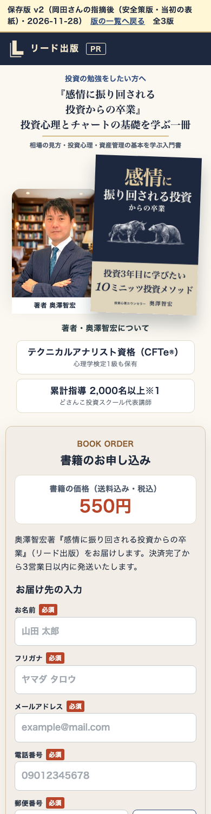
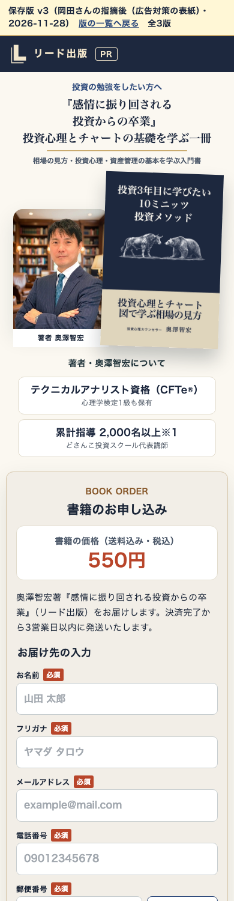

『感情に振り回される投資からの卒業』販売LP 版の一覧と、岡田さんの指摘のチェック
岡田さん（広告の専門家）の動画の指摘の前と後の版を、両方開けるように残しています。今の公開版（いちばん新しい版）：https://tanakayuc.github.io/static-pages/okuzawa-book-lp/
版の一覧
v1：岡田さんの指摘前
2026-11-27
書籍代0円・送料のみの申込、悩みから始める構成、伏せ字の段、比較の図、受講生の声、損失額の一文、本の図2-3・図4-7を載せていた版。
保存版を開く：https://tanakayuc.github.io/static-pages/okuzawa-book-lp/versions/v1/index.html

v2：岡田さんの指摘後（安全策版・当初の表紙）
2026-11-28
PR表記・送料込み550円・本の内容紹介だけの構成。危ない言葉の入った図を外し、教科書的な本の図3枚に差し替え。大会実績はFXDDの注釈つき。特商法は代表取締役 邑﨑恵理。Geminiの厳しいチェックリストで不合格0件。
保存版を開く：https://tanakayuc.github.io/static-pages/okuzawa-book-lp/versions/v2/index.html

v3：岡田さんの指摘後（広告対策の表紙）
2026-11-28
v2と同じ本文で、冒頭の書影だけを田中さんが採用した「広告対策案」の表紙（見出し「投資3年目に学びたい 10ミニッツ投資メソッド」、帯「投資心理とチャート／図で学ぶ相場の見方」）に差し替えた版。当初の表紙はv2に残している。
- 冒頭（ヘッド）の書影を、表紙比較の右案「広告対策案」に差し替えた（田中さんの決定 11/28）。ページの下の方の書影（特長・申込欄・運営スクールの欄）は当初の表紙のまま
保存版を開く：https://tanakayuc.github.io/static-pages/okuzawa-book-lp/versions/v3/index.html

画像は、それぞれの版をスマホの幅（390px）で開いた最初の画面です。保存版のページの一番上には、どの版かを示す黄色い帯を付けています（公開版には付けていません）。
v1 から v2 で変えた所
- ページ一番上に四角い枠の「PR」を入れた（00:00）
- 見出しを「投資の勉強をしたい方へ」から始め、本の題名はそのまま出した（00:00・01:06・田中さん）
- 書籍代0円・送料のみ → 送料込み 税込550円（03:13・田中さん）
- 悩み・実演から始める構成をやめ、「どんな本か → 本書の構成 → 本書の一部 → 主な内容 → 著者 → 特長 → 申込」の内容紹介だけにした（06:25・08:32）
- 含み益・含み損・利益・勝つ・不安・冷静に・まだ知らない、などの言葉を全部外した（00:00・04:18・05:21・07:29）
- 比較の図と矢印、伏せ字（ぼかし）の段を外し、ぼかしの指定もCSSから消した（05:21・07:29）
- 「損失管理」を「資産管理」にした（07:29）
- 受講生の声と、リーマンショックの損失額の一文を外した（08:32・02:10・田中さん）
- 累計指導人数に※1と「自社調べ」の注釈を付けた（01:06）
- 大会実績は「海外のFX会社FXDDが主催するFXトレード大会」と※2の注釈で示した（02:10・田中さん 11/28）
- 本の図2-3（「乗り遅れが怖い」）・図4-7（「損失条件」「利益」）を外し、図4-2・図4-4・図4-6の教科書的な図3枚にした（08:32・田中さん 11/28）
- 「撤退の目安」「一時的な下げを待つ買い」「候補」「見送る」「売買判断」「10ミニッツ」などの売買・手軽さの含みを外し、教科書のような説明にした（田中さん 11/28・Gemini）
- JAPAN MENSA・大学名・社名による権威付けと、スクールの巻末案内への誘いを外した（Gemini）
- 中央揃えのまま折り返す本文を左揃えにした（03:13）
- フッターに特商法・プライバシーポリシー・利用規約・会社情報を置いた（09:37）
- 特商法の運営統括責任者を「代表取締役 邑﨑恵理」にし、設立・FAXを足した。免責から「利益」を外した（田中さん 11/28）
岡田さんの動画の指摘のまとめ
Geminiが書き起こしの全文から時刻順にまとめ、Claude Codeが書き起こしと照らし合わせました。
- 00:00 一番上のリード出版の後にPRと書くか、四角枠で囲ってPRと入れること。「利益」という言葉は、本を読めば利益が残ると思われてしまうためNG。
- 01:06 投資の勉強であることを全面的に伝えること。初心者向けとし、お金の残し方や生み出し方にフォーカスしないこと。累計2000名超えにはどこ調べかの注釈を入れること。
- 02:10 CFTeや心理学検定1級が資格であればOK。4年連続12年（10位以内）が何のトレード大会か注釈で書くこと。リーマンショックで650万円の損失というコピーは、金額を出すとAI判定で弾かれる可能性があるため言わない方がいい。
- 03:13 書籍代0円（送料のみ）という見せ方が通るか分からないこと。テキストが左揃えになっていない箇所があること。
- 04:18 含み益・含み損などお金の話は一切しないこと。お勉強コンテンツという建前にしないと厳しい。
- 05:21 不安を煽る表現や煽り文は使わないこと。「冷静に」やれば勝てるという話に捉えられる表現は厳しい。
- 06:25 ビフォーアフターで変化があるように見せる比較や矢印は使わないこと。
- 07:29 損失管理より資産管理などの言い方がいいこと。まだ知らない、隠された裏技がある、必勝法と感じさせる表現は厳しい。モザイクはかなりやばい。
- 08:32 この本はこういう本ですと伝えるだけの構成にすること。本の実物がある感の画像は良い。受講生の声は各々に注釈が必要で、究極的にはなくした方がいい。
- 09:37 フッターに利用規約や会社情報を入れて充実させること。「感情に振り回される投資からの卒業」というタイトルは変化を示しているので言わない方がいい。タイトルだけで落とされる可能性もある。
- 11:46 「10ミニッツ投資メソッド」というタイトルにしてもいいかもしれない。表紙やタイトルが原因で落ちるなら、タイトルや表紙が変わる可能性があるという注釈を入れること。
チェックの結果（56 項目）
合格 49・不合格 0・田中さん判断 7
- O21：タイトル「感情に振り回される投資からの卒業」が変化を示しているため使わない方がいい。
- O22：表紙のタイトル変更や注釈について。
- R5：変化や効果を約束して見える言い方（〜できる、身につく、卒業 など）
- R6：時間が短くて済むことを売りにして見える言い方（10分 など）
- R9：「FX」という言葉そのものが金融商品の広告と見られないか
- R16：本の帯の言葉の引用（投資3年目 など）
- R26：題名の扱い
チェックリスト① 岡田さんの指摘（24 項目）
Geminiが動画で言ったことだけを1指摘1項目にしました。最後の2項目（C1・C2）は、Geminiの一覧に無かった所をClaude Codeが書き起こしと画面から足したものです。
| 番号 | 根拠（時刻・発言） | 確かめること | 結果 | LPの該当箇所 |
|---|---|---|---|---|
| O1 | 00:00 一番上のとこですね。ま、今リード出版と書いてありますがこっち側でもまあどこでもいいんで、ま、ここのリード出版の後でもいいですしあのPRと書いてください。 | PR表記が一番上にあるか。 | 合格 | index.html「リード出版 PR」 |
| O2 | 00:00 知識は増えたのになぜ利益が思うように残らないのかえ、というこのは利益ということまをもう使うっていうことは...基本的にこれもNGです。 | 「利益」という言葉を使っていないか。 | 合格 | index.html全体を確認し、「利益」という言葉は使用されていない。 |
| O3 | 01:06 投資のお勉強したい方はこの本みたいなえ、感じですね。...お金の残し方とかお金の生み出し方とかそういうところにフォーカスしてはいけない | 投資の勉強の教科書のように書かれているか。 | 合格 | index.html「投資の勉強をしたい方に向け、相場の見方と投資心理、日々の判断を記録する手順をまとめた書籍です。」 |
| O4 | 01:06 累計2000名超えというのはえ、ここに注釈入れないとだめですね。え、例えばどこ調べなのか | 累計指導人数に注釈があるか。 | 合格 | index.html「※1 累計指導人数は、どさんこ投資スクールの自社調べによるものです。」 |
| O5 | 02:10 CFTというのは資格なんですかね。この心理学検定1級というのが心理学の資格なと思うんですけど、まあこれが資格であればオッケーです。 | CFTeと心理学検定1級が資格として書かれているか。 | 合格 | index.html「テクニカルアナリスト資格（CFTe®） 心理学検定1級も保有」 |
| O6 | 02:10 4年連続12年、これが何のトレード大会なのかっていうところも書いた方がいいですね。で、まあ注釈で書くなりという感じです。 | 大会実績に何の大会か注釈があるか。 | 合格 | index.html「※2 海外のFX会社FXDDが主催し、「FXワールドカップ」「FXトレードチャレンジ」などの名称で開催されてきたFXのトレード大会での順位です。」 |
| O7 | 02:10 リーマンショックで650万円の損失を経験した著者が...金額出すってのはちょっとまあAI判定がね、怖いところですね。 | 損失額を出していないか。 | 合格 | index.html全体を確認し、損失額の記載はない。 |
| O8 | 03:13 このまあ送料のみというところがうーん、どう出るかっていう感じはちょっとします。...書籍代0円のやり口がうーん、通るのかな | 書籍代0円（送料のみ）という見せ方をしていないか。 | 合格 | index.html「書籍の価格（送料込み・税込） 550円」 |
| O9 | 03:13 ここが左揃えになってない感じが。 | テキストが左揃えになっているか。 | 合格 | 見た目の指定「本文の段落の揃え方：assets/okuzawa.css で text-align:left を指定」 |
| O10 | 04:18 含み益含み損っていうところもうん、なんかあんまり言わない方がいいような気がしちゃいますね。なんかもうお金の話一切しない | 含み益・含み損などお金の話をしていないか。 | 合格 | index.html全体を確認し、お金の増減に関する記載はない。 |
| O11 | 05:21 不安を煽るような表現って基本的にNGになりやすいので...煽り文は基本的にちょっと使わない方がいいかもですね。 | 不安を煽る表現がないか。 | 合格 | index.html「投資の基礎知識や相場の見方を書籍で順を追って学びたい方」など淡々とした説明のみ。 |
| O12 | 05:21 冷静にっていうのがえ、ま、冷静にやればじゃあ勝てるっていうことみたいな話に捉えられることもあるのでそこはちょっと厳しいとこですね。 | 冷静にやれば勝てるというような表現がないか。 | 合格 | index.html全体を確認し、該当する表現はない。 |
| O13 | 06:25 ビフォーアフターでこんな変化がありますっていう風に結局捉えられてしまうので、この矢印とかもそうですけど...あんまりそのビフォーアフターで比較にしない方がいい | ビフォーアフターの比較や矢印がないか。 | 合格 | index.html全体を確認し、ビフォーアフターの比較表現はない。 |
| O14 | 07:29 損失管理そうですね。うん、なんだろうな資産管理とかなんかそうなんかそういう言い方の方がいいかもしれないですね。 | 損失管理ではなく資産管理という言い方をしているか。 | 合格 | index.html「第5章 資産管理の基本と記録の方法」 |
| O15 | 07:29 まだ知らないっとかいうとなんか隠された裏技があるみたいな風にニュアンスとして捉えられるんで...必勝法という風に感じてしまうので | 隠された裏技や必勝法を感じさせる表現がないか。 | 合格 | index.html全体を確認し、該当する表現はない。 |
| O16 | 07:29 まあこのねモザイクとかもかなりやばそうですよね。 | モザイク（伏せ字やぼかし）がないか。 | 合格 | 見た目の指定「ぼかし（blur）の指定：なし」 |
| O17 | 08:32 この本はこういう本ですということをもう伝えるだけになってしまうかなと思いますね。 | 本の内容を伝えるだけの構成になっているか。 | 合格 | index.html「どんな本か」「本書の構成」など本の内容説明のみで構成されている。 |
| O18 | 08:32 こういうのなんかいいっすよね。もうなんか実物がちゃんとある感が | 本の実物がある感の画像があるか。 | 合格 | index.html「［画像の代わりの文：書籍の表紙］」 |
| O19 | 08:32 受講生のエピソードは注釈入れないとダメですね。...究極に審査通すっていう点で言うとこの受講生の声はなくした方がいい | 受講生の声（エピソード）をなくしているか。 | 合格 | index.html全体を確認し、受講生の声の記載はない。 |
| O20 | 09:37 フッターに利用規約って入れないとダメなんですよね。ええとええとこの下フッターもね結構充実させないといけなかった気がしますね。会社情報とかま利用規約 | フッターに利用規約や会社情報があるか。 | 合格 | index.html「特定商取引法に基づく表記 プライバシーポリシー 利用規約 会社情報」 |
| O21 | 09:37 感情に振り回される投資からの卒業っていうことは結局まあ変化を、うーん示してるというかこの本を読めばこうなりますって言ってしまってるのでここは言わない方がいいですね。 | タイトル「感情に振り回される投資からの卒業」が変化を示しているため使わない方がいい。 | 田中さん判断 | |
| O22 | 11:46 例えば10ミニッツ投資メソッドというタイトルにしてもいいかも...タイトルや表紙は変わる可能性がありますみたいな注釈を入れておけばいいかな | 表紙のタイトル変更や注釈について。 | 田中さん判断 | |
| C1 | 10:43「タイトルだけであなたのお手元にみたいな感じですか」 | 最後の申込欄の見出しを「書名を、あなたのお手元へ」程度にしているか | 合格 | index.html「『感情に振り回される投資からの卒業』を、あなたのお手元へ」 直し方・補足：Claude Codeが追加（Geminiの一覧に独立した項目が無かったため） |
| C2 | 10:20 画面に映っていた運営講師の言葉（「大儲けすることを諦めたとき、資産が増えるようになった」） | 運営講師の言葉（大儲け・資産が増える）が載っていないか | 合格 | index.html 全体に「大儲け」「資産が増える」なし 直し方・補足：Claude Codeが追加（話した言葉ではなく、動画の画面で指していた所） |
チェックリスト② 指摘から類推した厳しめのチェック（32 項目）
岡田さんの指摘と同じ理由で審査に引っかかりそうな所を、Geminiが厳しめに挙げたものです。不合格になった項目はClaude Codeが確かめて直し、もう一度Geminiに判定させています。
| 番号 | 根拠（時刻・発言） | 確かめること | 結果 | LPの該当箇所 |
|---|---|---|---|---|
| R1 | 04:18 お金の話一切しない | お金の増減を連想させる言い回し（全ページ。法定ページの免責も含む） | 合格 | tokusho.html「本商品は投資の学習を目的とした書籍です。」 |
| R2 | 07:29 必勝法という風に感じてしまう | 売買の判断や「待って買う」「見送る」のような手法の含み | 合格 | index.html「注文の前に確認しておく項目と取引数量の考え方、生活リズムに合う時間幅の選び方」 |
| R3 | 04:18 含み益含み損っていうところも...言わない方がいい | 損を避ける含み（撤退・損切り・リスク回避） | 合格 | index.html「資産管理の基本と記録の方法」 |
| R4 | 05:21 不安を煽るような表現って基本的にNG | 不安・焦り・恐れを連想させる言葉 | 合格 | index.html「投資の基礎知識や相場の見方を書籍で順を追って学びたい方」 |
| R5 | 09:37 変化があると言ってはもういけない | 変化や効果を約束して見える言い方（〜できる、身につく、卒業 など） | 田中さん判断 | |
| R6 | 07:29 隠された裏技があるみたいな風にニュアンスとして捉えられる | 時間が短くて済むことを売りにして見える言い方（10分 など） | 田中さん判断 | |
| R7 | 01:06 累計2000名超えというのはえ、ここに注釈入れないとだめですね。 | 実績の数字ごとの注釈と出所 | 合格 | index.html「※1 累計指導人数は、どさんこ投資スクールの自社調べによるものです。」 |
| R8 | 02:10 何のトレード大会なのかっていうところも書いた方がいい | 大会実績の注釈の中身（主催者・大会名・出所） | 合格 | index.html「※2 海外のFX会社FXDDが主催し、「FXワールドカップ」「FXトレードチャレンジ」などの名称で開催されてきたFXのトレード大会での順位です。大会名と順位は本人の資料によるものです。」 |
| R9 | 01:06 投資の勉強ですとま、いうところを全面的にもう伝えないといけなくって | 「FX」という言葉そのものが金融商品の広告と見られないか | 田中さん判断 | |
| R10 | 02:10 CFTというのは資格なんですかね。 | 他社名・団体名・大学名・商標（FXDD・パナソニック・東北大学・MENSA・CFTe など）の出し方 | 合格 | index.html「テクニカルアナリスト資格（CFTe®）」「海外のFX会社FXDDが主催する」 |
| R11 | 02:10 心理学検定1級というのが心理学の資格なと思うんですけど、まあこれが資格であればオッケーです。 | 資格の書き方 | 合格 | index.html「テクニカルアナリスト資格（CFTe®） 心理学検定1級も保有」 |
| R12 | 07:29 モザイクとかもかなりやばそう | 伏せ字やぼかし | 合格 | 見た目の指定「ぼかし（blur）の指定：なし」 |
| R13 | 04:18 お金の話一切しない | 図の中の言葉（図1枚ごと） | 合格 | 図の中の文字「帯は価格の上限・下限ではなく、売買の合図でもありません。」 |
| R14 | 08:32 この本はこういう本ですということをもう伝えるだけ | 画像の代わりの文 | 合格 | index.html「［画像の代わりの文：本書の図4-2。1日の値動きを1本のローソク足にまとめる模式図］」 |
| R15 | 01:06 投資のお勉強したい方はこの本みたいなえ、感じ | 見出し画像の中の言葉 | 合格 | 図の中の文字「投資の勉強をしたい方へ 『感情に振り回される 投資からの卒業』 投資心理とチャートの基礎を学ぶ一冊」 |
| R16 | 01:06 初心者向けでかつ | 本の帯の言葉の引用（投資3年目 など） | 田中さん判断 | |
| R17 | 01:06 投資の勉強ですとま、いうところを全面的にもう伝えないといけなくって | スクールへの誘導が投資サービスの勧誘に見えないか | 合格 | index.html「相場の見方や資産管理の基本に加え、過去のチャートを使って判断の理由を言葉にする練習や、投資心理との向き合い方をお伝えしています。」 |
| R18 | 04:18 あくまでお勉強コンテンツですっていうところにの建前にしないと | 免責の書き方 | 合格 | index.html「本書は投資の学習を目的とした一般的な情報をまとめた書籍であり、特定の金融商品や個別銘柄の売買を推奨するものではありません。」 |
| R19 | 09:37 会社情報とかま利用規約 | 特商法の項目（販売事業者・運営統括責任者・連絡先・価格・送料・届け方・返品） | 合格 | tokusho.html「販売事業者名 株式会社ザ・リード」「運営統括責任者 代表取締役 邑﨑恵理」 |
| R20 | 09:37 利用規約って入れないとダメなんですよね | プライバシーポリシーと利用規約の中身 | 合格 | privacy.html「個人情報保護方針（プライバシーポリシー）」、terms.html「利用規約」 |
| R21 | 09:37 会社情報とか | 会社情報 | 合格 | company.html「会社情報 会社名 株式会社ザ・リード」 |
| R22 | 00:00 一番上のとこですね...PRと書いてください | PR表記の場所と見え方 | 合格 | index.html「リード出版 PR」 |
| R23 | 03:13 ここが左揃えになってない感じが | 文字の揃え方 | 合格 | 見た目の指定「本文の段落の揃え方：assets/okuzawa.css で text-align:left を指定」 |
| R24 | 03:13 書籍代0円のやり口がうーん、通るのかな | 申込ボタンの文言 | 合格 | index.html「送料込み 税込550円で本を申し込む →」 |
| R25 | 03:13 書籍代0円のやり口がうーん、通るのかな | 価格の見せ方（割引や無料に見えないか） | 合格 | index.html「書籍の価格（送料込み・税込） 550円」 |
| R26 | 09:37 感情に振り回される投資からの卒業っていうことは結局まあ変化を...示してる | 題名の扱い | 田中さん判断 | |
| R27 | 01:06 本当初心者向けでかつ | 読者の書き方（初心者でも、など） | 合格 | index.html「読者を経験年数で限るものではなく、基礎から順に整理したい方に向けた構成になっています。」 |
| R28 | 08:32 この本はこういう本ですということをもう伝えるだけ | FAQの答え方 | 合格 | index.html「はい。第4章では、月足・週足・日足といった時間幅の違いや、ローソク足の始値・終値・高値・安値の見方から図解で解説しています。」 |
| R29 | 07:29 必勝法という風に感じてしまう | 投資手法の名称（スキャルピング・デイトレードなど）の扱い | 合格 | index.html「スキャルピング・デイトレード・スイングトレードといった時間幅の違いを整理し、生活リズムや確認できる時間帯に合わせた選択の考え方を解説します。」 |
| R30 | 06:25 感情を揺さぶるというか見てる人がま、不安に感じてしまうっていうところがま、ちょっとでもあると | 感情を揺さぶるコピーの有無 | 合格 | index.html「投資の勉強をしたい方に向け、相場の見方と投資心理、日々の判断を記録する手順をまとめた書籍です。」 |
| R31 | 09:37 フッターもね結構充実させないといけなかった | 決済方法の明記 | 合格 | index.html「お支払い方法はクレジットカード払いとなります。」 |
| R32 | 09:37 フッターもね結構充実させないといけなかった | 配送時期の明記 | 合格 | index.html「決済完了から3営業日以内に発送いたします。」 |
機械チェック（ページの文字を直接確かめた結果）
合計：31 項目のうち、合格 31・田中さん判断 0・不合格 0
| # | 動画の時刻 | 指摘・チェックポイント | 画面で指していた所 | 結果 | 確かめた内容 |
|---|---|---|---|---|---|
| 1 | 00:00 | ページ一番上に四角い枠のPR | 一番上のヘッダー（ロゴの横） | 合格 | ヘッダー内に枠つき「PR」あり |
| 2 | 00:00 | 見出しに「利益」を使わない | 冒頭の大見出し | 合格 | 見つからない |
| 3 | 01:06 | 「投資の勉強」の本だと前面に出す | 冒頭の大見出し | 合格 | 見出し画像の一行目と、読み上げ用の見出し（h1）に「投資の勉強をしたい方へ」 |
| 4 | 01:06 | お金の残し方・生み出し方に焦点を当てない | ページ全体 | 合格 | ページの文章にも本の図の中にも無い |
| 5 | 01:06 | 累計2,000名に注釈※1と出所 | 著者の帯・著者紹介・講師欄 | 合格 | 2,000名の後ろに必ず※1、フッターに「自社調べ」 |
| 6 | 02:10 | CFTe・心理学検定1級が資格と分かる | 著者の帯 | 合格 | 「テクニカルアナリスト資格（CFTe®）」「心理学検定1級」 |
| 7 | 02:10→田中さん | 岡田さん：何のトレード大会か注釈などで書いた方がいい。田中さん（11/28）：「海外FX会社、FXDD主催のFXトレード大会で」と書く。大会の記載すべてに※2、注釈に主催者・大会名・出所 | 著者紹介・講師欄 | 合格 | 大会の記載すべて（2か所）に※2。注釈：海外のFX会社FXDDが主催し、「FXワールドカップ」「FXトレードチャレンジ」などの名称で開催されてきたFXのトレード大会での順位です。大会名と順位は本人の資料によるものです。 |
| 8 | 02:10→田中さん | 岡田さん：損失額は金額でAIに弾かれる可能性がある（「いいかもしんない」とも言った）。田中さんの判断：リーマンショックで650万円の損失の一文を消す | 著者の帯の下・著者紹介（08:50で選択） | 合格 | 見つからない |
| 9 | 03:13→田中さん | 岡田さん：「書籍代0円・送料のみ」は投資案件で通るか分からない。田中さんの判断：送料込み550円に | 申込欄・特長・終盤・特商法・自動返信 | 合格 | LP・特商法・自動返信メールすべて「送料込み」、0円表記なし |
| 10 | 03:40 | 中央揃えのまま折り返す本文をやめる（左揃え） | 悩みセクションの最後の段落（04:00で選択） | 合格 | 悩みの最後の段落は削除。375・768・1280pxで開き、2行以上に折り返す段落に中央揃えが0件（画面で実測） |
| 11 | 04:18 | 含み益・含み損などお金に触れる言葉を消す | 日常の3場面 | 合格 | ページの文章にも本の図の中にも無い |
| 12 | 04:18 | 不安を煽る表現を使わない | 悩みのセクション | 合格 | ページの文章にも本の図の中にも無い |
| 13 | 05:21 | 「冷静に売買できる？」をやめる | 比較のセクションの見出し | 合格 | 見つからない |
| 14 | 05:21 | 「これまで→本書の視点」の比較と矢印の図をやめる | 比較のセクション | 合格 | 比較の図・比較カードなし |
| 15 | 06:25 | 「この本はこういう本です」の内容紹介にする | ページ全体の構成 | 合格 | 「どんな本か」「本書の構成」「本書で扱う主な内容」で構成 |
| 16 | 07:29 | 悩み・「たとえば値上がりを見て買いたくなった朝」をやめ、本の内容から始める | 悩み・実演（07:20）→「6つの視点」（07:30） | 合格 | ページの文章にも本の図の中にも無い |
| 17 | 07:29 | 「損失管理」を「資産管理」などに | 6つの視点の05 | 合格 | ページの文章にも本の図の中にも無い |
| 18 | 07:29 | 「まだ知らない方法」と伏せ字（モザイク）をやめる | バレット第1段（08:00） | 合格 | 伏せ字の段ごと削除 |
| 19 | 08:32→田中さん | 岡田さん：本の図を見て「こういうのなんかいいっすよね。もうなんか実物がちゃんとある感が」。田中さん（11/28）：危ない図（図2-3・図4-7）は差し替え、実物の図解はもう少し載せる | 特長の図 | 合格 | 本の実物の図を3枚（図4-2・図4-4・図4-6）。図2-3・図4-7は外した |
| 20 | 08:32→田中さんの方針 | 岡田さん：受講生の声は1件ずつ注釈。審査を最優先なら無くした方がいい。田中さんの方針（入れない方がいいと言われた所は外す）を当てて載せない | 受講生のエピソード（09:10） | 合格 | 見つからない |
| 21 | 09:37 | フッターに利用規約・会社情報 | フッター（09:50） | 合格 | フッターに4つのリンク、利用規約・会社情報のページあり |
| 22 | 09:37 | 変化を示す見出し（〜からの卒業へ）をやめる | 終盤の見出し | 合格 | 見つからない |
| 23 | 10:20 | 運営講師の言葉（大儲け・資産が増える）をやめる | 運営講師の欄（10:20〜10:30に表示） | 合格 | 見つからない |
| 24 | 10:43 | 最後は「書名を、あなたのお手元へ」程度 | 最後の申込欄の見出し | 合格 | 「『書名』を、あなたのお手元へ」 |
| 25 | 10:43 | 書名は今回そのまま（落ちたら、そこから表紙画像の書名の変更と注釈を考える） | 書名 | 合格 | 書名は変えずに出す。落ちた場合の手順は SKILL.md と handoff に記載 |
| 26 | 全体 | NG表現チェック（skills/投資系広告コピー）で0件 | ページ全体 | 合格 | index.html：要修正 0 件・必須要素の欠け 0 件 |
| 27 | 田中さん | 特商法はザ・リードの表記。運営統括責任者は「代表取締役 邑﨑恵理」（11/28 田中さん：片岡守さんのAIコンサルタント養成講座の特商法にそろえる） | 特商法のページ | 合格 | 販売事業者・運営統括責任者（代表取締役 邑﨑恵理）・設立・所在地・電話・FAX・メール・HP。免責に「利益」なし |
| 28 | 田中さん | プライバシーポリシーはWEB集客本と同じ本文。責任者は「代表取締役 邑﨑恵理」 | プライバシーポリシーのページ | 合格 | UTAGEの原文と本文が一致（責任者の肩書きだけ足した。空白を除いて比較） |
| 29 | 11/28 田中さん | 教科書のように書く。利益を上げる・損を避ける・売買の手法・手軽さ・権威付けの含みを残さない（Geminiの厳しいチェックで出た所も含む） | ページ全体 | 合格 | 見つからない |
| 30 | 07:29 | ぼかし（モザイク）の指定がページのCSSにも残っていない | 見た目の指定 | 合格 | style.css・okuzawa.css に blur の指定なし |
| 31 | Gemini | Geminiのチェックリスト（岡田さんの指摘＋類推）で不合格0件。今のページより新しい判定であること | 全ページ | 合格 | 20261128-063012：岡田さんの指摘 22・類推 32 項目。不合格 0・田中さん判断 7（題名・大会実績） |
Geminiの判定の記録：20261128-063012（モデル gemini-3.1-pro-preview・2026-11-28T06:31:53）。書いたのはClaude Code、確かめたのはGemini、最後の確認は田中さんです。